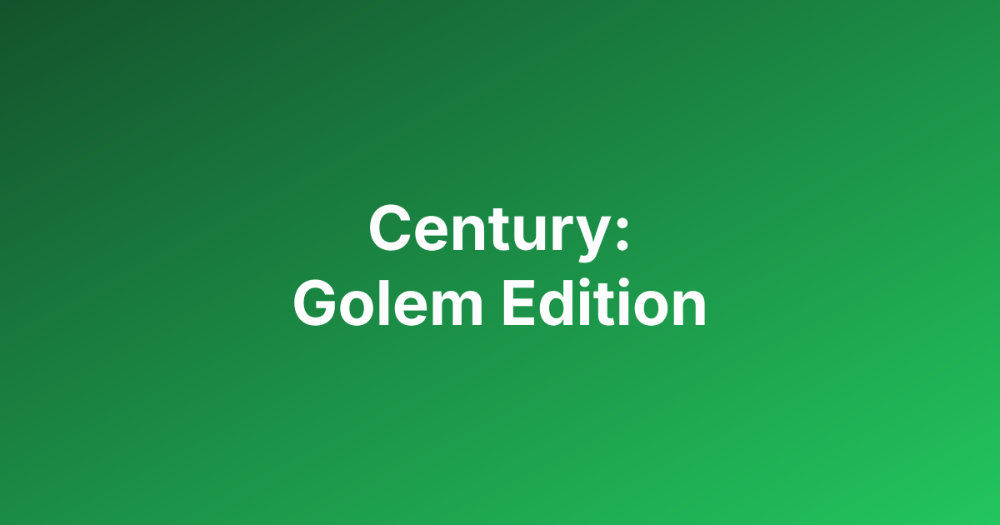

A game where players act as crystal traders, collecting and upgrading crystals to acquire Golem Point Cards. The player with the most points at the end of the game wins.
Players take turns clockwise. On your turn, you must perform one of the following actions:
The game ends when a player claims their 6th Golem Point Card (in a 2-3 player game) or 5th Golem Point Card (in a 4-5 player game). The current round is finished, allowing all players an equal number of turns.
Points are calculated from your Golem Point Cards, bonus tokens, and any non-yellow crystals remaining in your caravan.
The player with the most points wins.